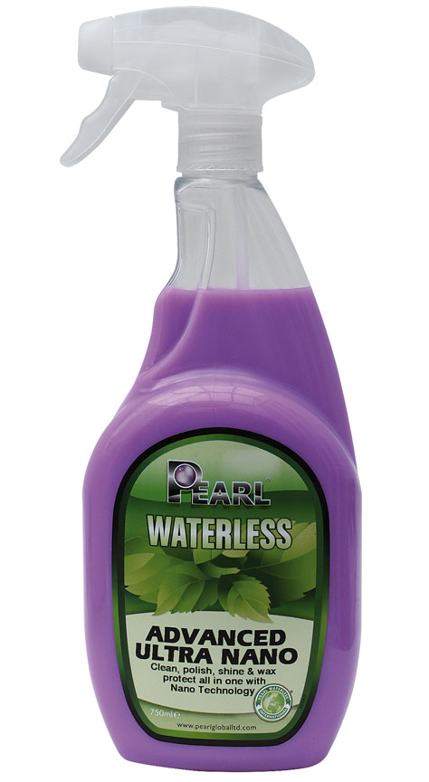
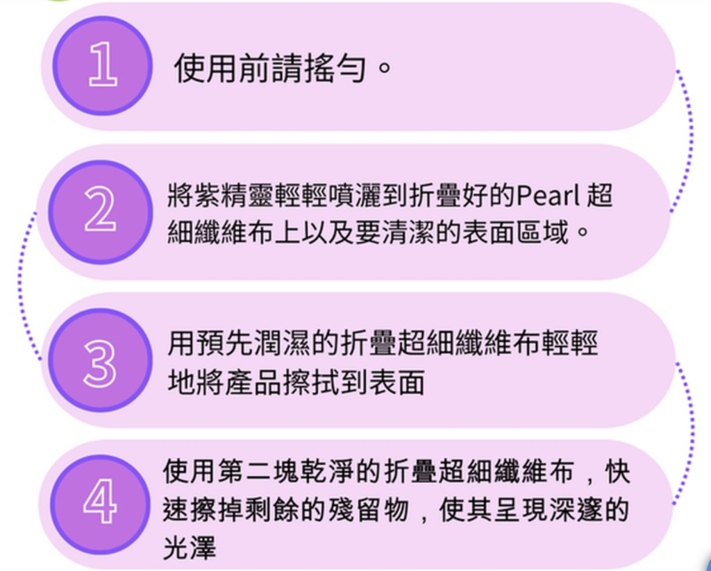

旗艦 · 2-Wax 超疏水
ADVANCED ULTRA NANO 紫精靈
高級奈米清潔打蠟噴霧 · 750ml
採用 2-Wax 動態超疏水技術與荷葉效應，結合巴西棕櫚蠟。噴、擦、拋一氣呵成，清潔同時留下深邃光澤與持久撥水保護。
核心賣點：2-Wax 超疏水 · 荷葉效應 · 巴西棕櫚蠟
施工方式：噴 → 擦 → 拋（收光）
適用：車身烤漆日常清潔與防護
諮詢 / 訂購
使用步驟
- 1使用前充分搖勻瓶身
- 2噴於超細纖維布與車身表面
- 3以濕潤布面輕柔擦拭帶走污垢
- 4換乾淨乾布收光拋亮
